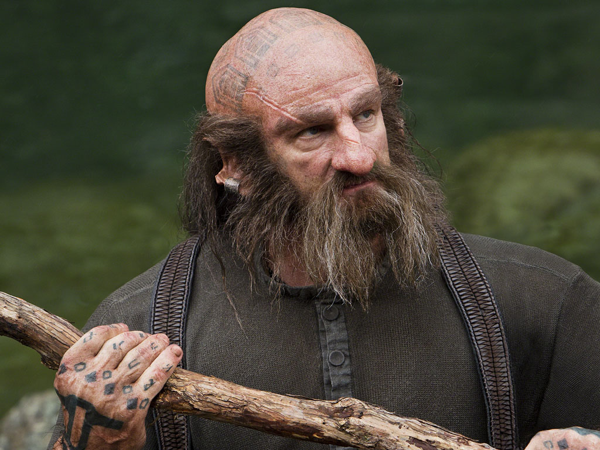

I wish somebody would add my name to the title and h1 of this page, and add my picture!
Dwalin is one of the draws and a best buddy of a hobbit.
Dwalin's place of birth is unknown – two years before he was born the dragon Smaug had come to Erebor[3] and destroyed King Thrór's kingdom. Thrór, his son Thráin, and a small group of kinsmen and followers headed south while other Dwarves escaped to the Iron Hills.[4] After the Battle of Azanulbizar, Thráin II and Thorin settled in the northern Ered Luin[2] and at some point Dwalin joined them.
